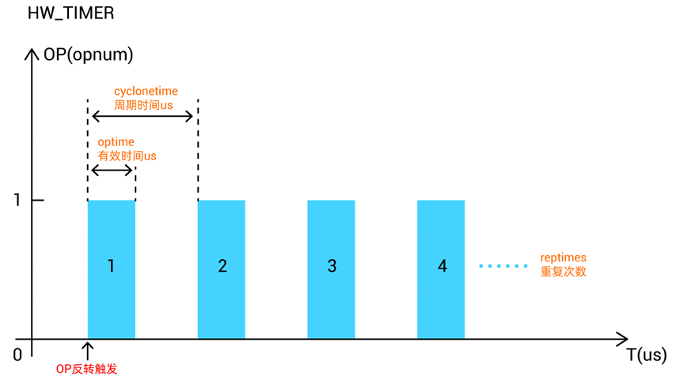
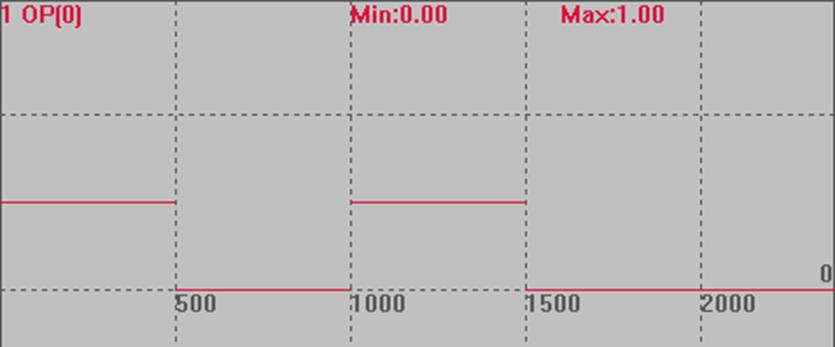
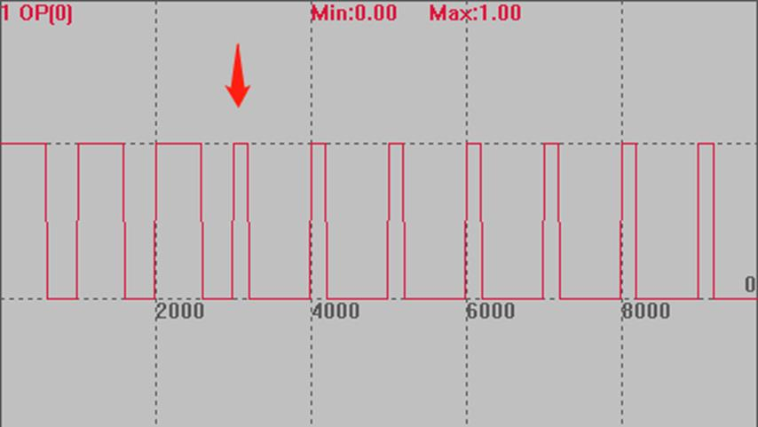
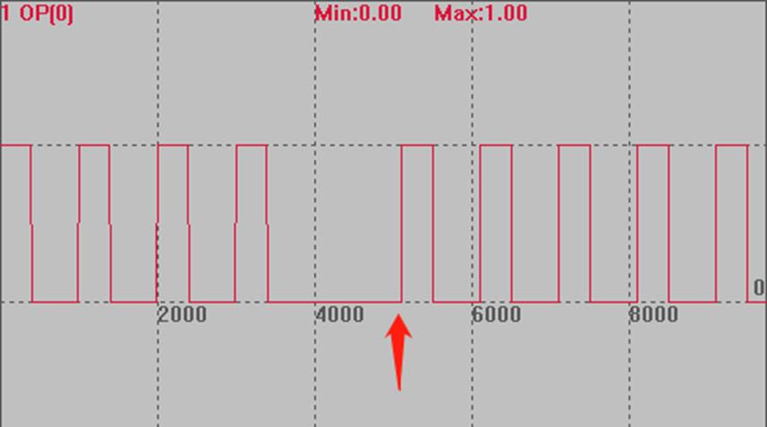
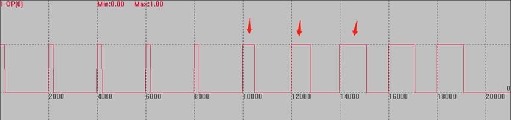

|
类型 |
特殊命令 |
|
描述 |
硬件定时器，用于硬件比较输出后一段时间后还原电平。 建议不超过100ms 注意事项： HW非独立的控制器只有一个HW_TIMER，每次调用会强制停止之前的调用。 HW独立的控制器，每路HWOP有一个HW_TIMER。 ZMC420SCAN每个输出口的HW_TIMER功能独立。 HW_TIMER不使用时需要使用模式0停止，否则将持续开启，可能影响后续的比较输出。 先用模式2开启硬件定时器，才能使用其他的模式修改。
振镜控制器20170709以上固件版本增加功能： OP和MOVE_OP操作会关闭正在进行的HW_TIMER脉冲，这样可以使用HW_TIMER来实现类似PWM的功能，OP输出打开脉冲输出，下一个OP输出关闭脉冲输出，当使用MOVE_OP精准输出时，可以实现精准的PWM输出无限脉冲功能。 使用?*HW_TIMER可以看到还有多少脉冲剩余。 |
|
语法 |
HW_TIMER(mode, cyclonetime, optime, reptimes, opstate, opnum ) done = HW_TIMER_DONE mode：0-停止硬件定时器，1-动态修改参数（不修改启动设置），2-启动（启动后不可重复开启），3--停止硬件定时器（类似0，针对振镜控制器），当前脉冲完成后不再输出，但后面的OP仍会继续触发脉冲 cyclonetime：周期时间，us单位 optime：有效时间，us单位 reptimes：重复次数，启动模式，reptimes =0时，软关闭HW_TIMER，原来的脉冲没有完成的，会继续输出完成；-1时无限输出，除非主动关闭 opstate：输出缺省状态，输出口变为非此状态后开始计时（输出口初始状态OFF。一般此参数设为OFF，将输出口变为ON状态后开始计时） opnum：输出口编号，必须能硬件比较输出的口 
振镜控制器20170710以上版本增加mode 3，类似0，当前脉冲完成后不再输出，但后面的OP仍会继续触发脉冲。而模式0停止之后无法OP继续触发，必须重新启动。
振镜控制器20170710以上版本增加mode 1，1支持再次发送之后动态修改定时的参数，模式1不可用于开启硬件定时器，在模式2没有比较完之前执行模式1才会生效；模式2不可重复开启。
ZMC420SCAN 221017增加mode4，脉冲duty变化功能，配合模式1/2使用。 HW_TIMER(mode4, [trigremaintime, ][changetimes,] [changeonetick], reserve, opnum) trigremaintime：剩余多少个脉冲数时开始调整脉冲的宽度，注意第一个脉冲不变化，0-表示不使用 changetimes：变化脉冲个数 changeonetick：每个脉冲的宽度变化，us单位，可以为负数 reserve：预留，设为0即可 opnum：输出口编号，必须能硬件比较输出的口 应用此模式脉冲宽度要合理设置，脉冲宽度累加后超出周期时，后续无法正常输出，模式4不使用时将第2-4的参数设为0，否则下次仍然生效。 |
|
适用控制器 |
3系列部分、4系列及以上产品，4系列固件20170704及以上 |
|
以下例程测试环境：ZMC420SCAN，固件：221017（仿真器无法运行此指令）。 为了直观显示波形，周期设置的较大。
例一：模式2，周期输出脉冲 RAPIDSTOP(2) WAIT IDLE(0) BASE(0) ATYPE=1 UNITS=100 SPEED=100 ACCEL=500 DPOS=0 HW_TIMER(0, 1000000, 500000, 2, OFF, 0) '模式0停止硬件定时器 TRIGGER OP(0, OFF) HW_TIMER(2, 1000000, 500000, 2, OFF, 0) '输出口0变为on后，硬件定时器触发开始计时，500ms 后切换为off OP(0, ON)
运行效果：以1000ms为周期，输出两个周期，每个周期前500ms开启，后半个周期关闭。 
例二：模式1，周期输出脉冲；模式2开启之后，再使用模式1动态修改 BASE(0) ATYPE=1 UNITS=100 SPEED=100 ACCEL=500 DPOS=0 OP(0, OFF) TRIGGER HW_TIMER(2,1000000,600000,10,OFF,0) '输出口0变为on后，硬件定时器触发开始计时，600ms 后切换为off OP(0, ON) DELAY(2500) '2.5s之后模式1生效，修改定时时间，时间不能太大，模式2若比较完成，模式1将无法生效。 HW_TIMER(1, 1000000, 200000, 5, OFF, 0) '动态修改
模式1可修改上一条的定时时间（上一条可以是模式1或模式2），此例若改成模式2，再次扫描到模式2时OP不动作。 
例二 模式3，停止输出，之后仍能OP触发 BASE(0) ATYPE=1 UNITS=100 SPEED=100 ACCEL=500 DPOS=0 OP(0, OFF) TRIGGER HW_TIMER(2,1000000,400000,10,OFF,0) '输出口0变为on后，硬件定时器触发开始计时，400ms 后切换为off OP(0, ON) DELAY(3000) '延时3s后关闭输出 HW_TIMER(3, 1000000, 400000, 10, OFF, 0)
OP打开，模式2正常输出脉冲，3s后模式3生效，停止输出，再次开启OP触发HW，仍能继续输出10次。（箭头处为OP再次触发时刻） 此次若使用模式0，停止后再次开启OP无法触发HW，需重新扫描HW命令。 
例三 BASE(0) ATYPE=1 UNITS=100 SPEED=100 ACCEL=500 DPOS=0 OP(0, OFF) TRIGGER HW_TIMER(2,2000000,200000,10,OFF,0) '输出口0变为on后，硬件定时器触发开始计时，2s周期，打开200ms 后切换为off OP(0, ON) HW_TIMER(4,6,3,300000,OFF,0) '模式4用于控制部分脉冲的宽度。 'HW_TIMER(4,0,0,0,OFF,0) '比较完成，关闭模式4
如下图：模式2的作用下产生了10个脉冲，模式4控制倒数第六个脉冲之后开始生效（因为第一个不变化，故倒数第6个无变化，从倒数第5个开始生效），连续控制3个脉冲宽度，每个脉冲依次累加300ms后再固定宽度输出。  | |
|
相关指令 |